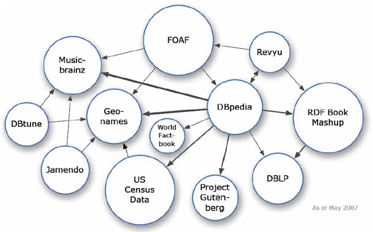

Bertrand Chevrier (at) CGI (dot com)
World Wide Web

Internet !== Web

Internet = TCP/IP, UDP, etc.

Web = URI + HTTP + HTML

from Nova Spivack blog
Web 3.0 ?
- Cloud computing
- Web Mobile
- High power of personalization
- Evolved Search (accept command)
- Data integration and portability
- Move to NoSql Databases (graph and triple stores)
I have a dream for the Web [in which computers] become capable of analyzing all the data on the Web — the content, links, and transactions between people and computers.
A “Semantic Web”, which should make this possible, has yet to emerge, but when it does, the day-to-day mechanisms of trade, bureaucracy and our daily lives will be handled by machines talking to machines.
The “intelligent agents” people have touted for ages will finally materialize.
from Tim Berners-Lee, Weaving the Web
Semantic ?
Metadata framework for the web
- Interoperability at the level of the web
- Sharing the knowledge
- Smart app

★ Unfiltered data online
★ ★ Structured
★ ★ ★ Free license and not in a proprietary format
★ ★ ★ ★ URI are used to identified the data
★ ★ ★ ★ ★ Data linked to others to give them a context
★ ★ Structured
★ ★ ★ Free license and not in a proprietary format
★ ★ ★ ★ URI are used to identified the data
★ ★ ★ ★ ★ Data linked to others to give them a context
Linked data
May 2007

And now
Give more sens to your data!
Semantic web already exists...
- HTML / HTML5
- Atom, RSS
- Microdata
- ...
HTML
<header>
<h1>Title</h1>
<h2>Subtitle</h2>
<nav>
<ul>
<li>Menu 1</li>
<li>Menu 2</li>
</ul>
</nav>
</header>
<section>
<article id="news1">
<h1>title</h1>
<time value="" />
</article>
<article id="news2">
<h1>title</h1>
<time value="" />
</article>
</section>
<aside>My links</aside>
<footer>Copyright</footer>RSS
<rss version="2.0">
<channel>
<title>W3Schools Home Page</title>
<link>http://www.w3schools.com</link>
<description>Free web building tutorials</description>
<item>
<title>RSS Tutorial</title>
<link>http://www.w3schools.com/rss</links>
<description>New RSS tutorial on W3Schools</description>
</item>
<item>
<title>XML Tutorial</title>
<link>http://www.w3schools.com/xml</link>
<description>New XML tutorial on W3Schools</description>
</item>
</channel>
</rss>
Microdata
<section itemscope itemtype="http://schema.org/Person">
Hello, my name is
<span itemprop="name">Bertrand Chevrier</span>,
You can visit my blog at
<a href="http://krampstudio.com" itemprop="url">krampstudio.command</a>.
I am a
<span itemprop="jobTitle">technical expert</span>
for
<span itemprop="worksFor">CGI</span>,
located at
<section itemprop="workLocation" itemscope itemtype="http://schema.org/Place">
<section itemprop="address" itemscope itemtype="http://schema.org/PostalAdress">
<span itemprop="streetAddress">7 za Bourmicht</span>,
<span itemprop="addressLocality">Bertrange</span>,
<span itemprop="addressRegion">Luxembourg</span>.
</section>
<a href="https://maps.google.lu/maps/place?ftid=0x4795495440640fdb:0x96de6cd68cc3d24b" itemprop="map">See the map</a>
</section>
</section>
Semantic web stack
RDF
Resource Description Format
- W3C Specification
- Metadata data model for the web
- Based on triples in a graph
- Serialized to XML (but not only)
- Not for people but for computers
Triple {S,P,O}
Triple
RDF
<rdf:RDF xmlns:rdf="http://www.w3.org/1999/02/22-rdf-syntax-ns#"
xmlns:cd="http://www.recshop.fake/cd#">
<rdf:Description rdf:about="http://www.recshop.fake/cd/Empire Burlesque">
<cd:artist>Bob Dylan</cd:artist>
<cd:country>USA>/cd:country>
<cd:company>Columbia</cd:company>
<cd:price>10.90</cd:price>
<cd:year>1985</cd:year>
</rdf:Description>
<rdf:Description rdf:about="http://www.recshop.fake/cd/Hide your heart">
<cd:artist>Bonnie Tyler</cd:artist>
<cd:country>UK</cd:country>
<cd:company>CBS Records</cd:company>
<cd:price>9.90</cd:price>
<cd:year>1988</cd:year>
</rdf:Description>
</rdf>RDF Schema
Extends RDF to build ontologies
- Classes and subclasses
- Properties and subproperties
- domain : the class of the property subject
- range : the type of the property value
SPARQL
PREFIX cd: <http://www.recshop.fake/cd>
SELECT ?album, ?year
WHERE {
?album cd:artist "Bob Dylan" .
?album cd:year ?year
}
Real world
RDF APIs
- Java : Apahce Jena
- PHP : RAP
- Python : rdflib
- C# : dotNetRDF
- ...
Apache 
// create an empty Model
Model model = ModelFactory.createDefaultModel();
// create a new resource
Resource album = model.createResource("http://www.recshop.fake/cd/Hide your heart")
.addProperty("http://www.recshop.fake/cd#artist", "Bob Dylan")
.addProperty("http://www.recshop.fake/cd#year", "1988");
//display the graph
model.write(new PrintWriter(System.out));
Triple store
- Proprietary: Virtuoso, AllegroGraph, Oracle Spatial and Graph
- Open source: BigData, Sesame, Mulgara